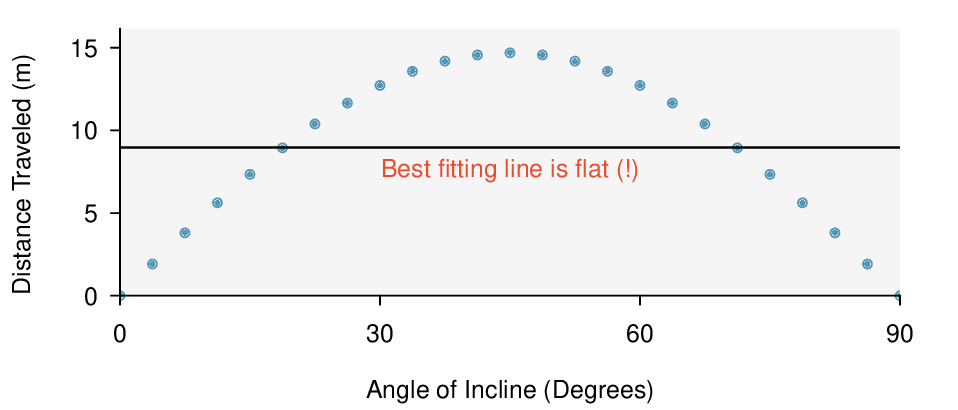
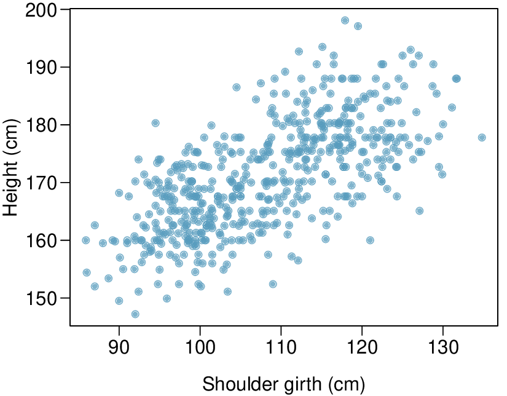

Section7.1Line fitting, residuals, and correlation
In this section, we investigate bivariate data. We examine criteria for identifying a linear model and introduce a new bivariate summary called correlation. We answer questions such as the following:
How do we quantify the strength of the linear association between two numerical variables?
What does it mean for two variables to have no association or to have a nonlinear association?
Once we fit a model, how do we measure the error in the model’s predictions?
Subsection7.1.1
Objectives:Learning objectives
Distinguish between the data point \(y\) and the predicted value \(\hat{y}\) based on a model.
Calculate a residual and draw a residual plot.
Interpret the standard deviation of the residuals.
Interpret the correlation coefficient and estimate it from a scatterplot.
Know and apply the properties of the correlation coefficient.
Subsection7.1.2Fitting a line to data
Requests from twelve separate buyers were simultaneously placed with a trading company to purchase Target Corporation stock (ticker TGT, April 26th, 2012). We let \(x\) be the number of stocks to purchase and \(y\) be the total cost. Because the cost is computed using a linear formula, the linear fit is perfect, and the equation for the line is: \(y = 5 + 57.49x\text{.}\) If we know the number of stocks purchased, we can determine the cost based on this linear equation with no error. Additionally, we can say that each additional share of the stock cost $57.49 and that there was a $5 fee for the transaction.
Figure7.1.1.Total cost of a trade against number of shares purchased.
Perfect linear relationships are unrealistic in almost any natural process. For example, if we took family income (\(x\)), this value would provide some useful information about how much financial support a college may offer a prospective student (\(y\)). However, the prediction would be far from perfect, since other factors play a role in financial support beyond a family’s income.
It is rare for all of the data to fall perfectly on a straight line. Instead, it’s more common for data to appear as a cloud of points, such as those shown in Figure 7.1.2. In each case, the data fall around a straight line, even if none of the observations fall exactly on the line. The first plot shows a relatively strong downward linear trend, where the remaining variability in the data around the line is minor relative to the strength of the relationship between \(x\) and \(y\text{.}\) The second plot shows an upward trend that, while evident, is not as strong as the first. The last plot shows a very weak downward trend in the data, so slight we can hardly notice it.
In each of these examples, we can consider how to draw a “best fit line”. For instance, we might wonder, should we move the line up or down a little, or should we tilt it more or less? As we move forward in this chapter, we will learn different criteria for line-fitting, and we will also learn about the uncertainty associated with estimates of model parameters.
Figure7.1.2.Three data sets where a linear model may be useful even though the data do not all fall exactly on the line.
We will also see examples in this chapter where fitting a straight line to the data, even if there is a clear relationship between the variables, is not helpful. One such case is shown in Figure 7.1.3 where there is a very strong relationship between the variables even though the trend is not linear.

Figure7.1.3.A linear model is not useful in this nonlinear case. These data are from an introductory physics experiment.
Subsection7.1.3Using linear regression to predict possum head lengths
Brushtail possums are a marsupial that lives in Australia. A photo of one is shown in Figure 7.1.4. Researchers captured 104 of these animals and took body measurements before releasing the animals back into the wild. We consider two of these measurements: the total length of each possum, from head to tail, and the length of each possum’s head.
Figure 7.1.5 shows a scatterplot for the head length and total length of the 104 possums. Each point represents a single point from the data.
Figure7.1.4.The common brushtail possum of Australia. Photo by Peter Firminger on Flickr: http://flic.kr/p/6aPTn 1 
Figure7.1.5.A scatterplot showing head length against total length for 104 brushtail possums. A point representing a possum with head length 94.1Â mm and total length 89Â cm is highlighted.
The head and total length variables are associated: possums with an above average total length also tend to have above average head lengths. While the relationship is not perfectly linear, it could be helpful to partially explain the connection between these variables with a straight line.
We want to describe the relationship between the head length and total length variables in the possum data set using a line. In this example, we will use the total length, \(x\text{,}\) to explain or predict a possum’s head length, \(y\text{.}\) When we use \(x\) to predict \(y\text{,}\) we usually call \(x\) the explanatory variable or predictor variable, and we call \(y\) the response variable. We could fit the linear relationship by eye, as in Figure 7.1.6. The equation for this line is
A “hat†on \(y\) is used to signify that this is a predicted value, not an observed value. We can use this line to discuss properties of possums. For instance, the equation predicts a possum with a total length of 80 cm will have a head length of
The value \(\hat{y}\) may be viewed as an average: the equation predicts that possums with a total length of 80Â cm will have an average head length of 88.2Â mm. The value \(\hat{y}\) is also a prediction: absent further information about an 80Â cm possum, this is our best prediction for a the head length of a single 80Â cm possum.
Subsection7.1.4Residuals
Residuals are the leftover variation in the response variable after fitting a model. Each observation will have a residual, and three of the residuals for the linear model we fit for the possum data are shown in Figure 7.1.6. If an observation is above the regression line, then its residual, the vertical distance from the observation to the line, is positive. Observations below the line have negative residuals. One goal in picking the right linear model is for these residuals to be as small as possible.
Figure7.1.6.A reasonable linear model was fit to represent the relationship between head length and total length.
Let’s look closer at the three residuals featured in Figure 7.1.6. The observation marked by an “׆has a small, negative residual of about -1; the observation marked by “\(+\)†has a large residual of about +7; and the observation marked by “\(\triangle\)†has a moderate residual of about -4. The size of a residual is usually discussed in terms of its absolute value. For example, the residual for “\(\triangle\)†is larger than that of “׆because \(|-4|\) is larger than \(|-1|\text{.}\)
Residual: difference between observed and expected.
The residual for a particular observation \((x, \ y)\) is the difference between the observed response and the response we would predict based on the model:
We typically identify \(\hat{y}\) by plugging \(x\) into the model.
Example7.1.7.
The linear fit shown in Figure 7.1.6 is given as \(\hat{y} = 41 + 0.59x\text{.}\) Based on this line, compute and interpret the residual of the observation \((77.0, \ 85.3)\text{.}\) This observation is denoted by “׆on the plot. Recall that \(x\) is the total length measured in cm and \(y\) is head length measured in mm.
Solution.
We first compute the predicted value based on the model:
The residual for this point is -1.1 mm, which is very close to the visual estimate of -1 mm. For this particular possum with total length of 77 cm, the model’s prediction for its head length was 1.1 mm too high.
Checkpoint7.1.8.
If a model underestimates an observation, will the residual be positive or negative? What about if it overestimates the observation? 3 
If a model underestimates an observation, then the model estimate is below the actual. The residual, which is the actual observation value minus the model estimate, must then be positive. The opposite is true when the model overestimates the observation: the residual is negative.
Checkpoint7.1.9.
Compute the residual for the observation \((95.5, 94.0)\text{,}\) denoted by “\(\triangle\)†in the figure, using the linear model: \(\hat{y} = 41 + 0.59x\text{.}\) 4 
First compute the predicted value based on the model, then compute the residual. \(\hat{y}=41+0.59x = 41+ 0.59(95.50)=97.3\) and \(\text{residual } = y-\hat{y}= 94.0- 97.3 =-3.3\text{.}\) The residual is \(-3.3\text{,}\) so the model overpredicted the head length for this possum by 3.3 mm.
Residuals are helpful in evaluating how well a linear model fits a data set. We often display the residuals in a residual plot such as the one shown in Figure 7.1.11. Here, the residuals are calculated for each \(x\) value, and plotted versus \(x\text{.}\) For instance, the point \((85.0,98.6)\) had a residual of 7.45, so in the residual plot it is placed at \((85.0, 7.45)\text{.}\) Creating a residual plot is sort of like tipping the scatterplot over so the regression line is horizontal.
From the residual plot, we can better estimate the standard deviation of the residuals, often denoted by the letter \(s\text{.}\) The standard deviation of the residuals tells us typical size of the residuals. As such, it is a measure of the typical deviation between the \(y\) values and the model predictions. In other words, it tells us the typical prediction error using the model. 5 
The standard deviation of the residuals is calculated as: \(s=\sqrt{\frac{\sum{(y_i-\hat{y})^2}}{n-2}}\text{.}\)
Example7.1.10.
Estimate the standard deviation of the residuals for predicting head length from total length using the line: \(\hat{y} = 41+0.59x\) using Figure 7.1.11. Also, interpret the quantity in context.
Solution.
To estimate this graphically, we use the residual plot. The approximate 68, 95 rule for standard deviations applies. Approximately 2/3 of the points are within \(\pm\) 2.5 and approximately 95% of the points are within \(\pm\) 5, so 2.5 is a good estimate for the standard deviation of the residuals. The typical error when predicting head length using this model is about 2.5Â mm.
Figure7.1.11.Left: Scatterplot of head length versus total length for 104 brushtail possums. Three particular points have been highlighted. Right: Residual plot for the model shown in left panel.
Standard deviation of the residuals.
The standard deviation of the residuals, often denoted by the letter \(s\text{,}\) tells us the typical error in the predictions using the regression model. It can be estimated from a residual plot.
Example7.1.12.
One purpose of residual plots is to identify characteristics or patterns still apparent in data after fitting a model. Figure 7.1.13 shows three scatterplots with linear models in the first row and residual plots in the second row. Can you identify any patterns remaining in the residuals?
Solution.
In the first data set (first column), the residuals show no obvious patterns. The residuals appear to be scattered randomly around the dashed line that represents 0.
The second data set shows a pattern in the residuals. There is some curvature in the scatterplot, which is more obvious in the residual plot. We should not use a straight line to model these data. Instead, a more advanced technique should be used.
The last plot shows very little upwards trend, and the residuals also show no obvious patterns. It is reasonable to try to fit a linear model to the data. However, it is unclear whether there is statistically significant evidence that the slope parameter is different from zero. The slope of the sample regression line is not zero, but we might wonder if this could be due to random variation. We will address this sort of scenario in Section 7.4.
Figure7.1.13.Sample data with their best fitting lines (top row) and their corresponding residual plots (bottom row).
Subsection7.1.5Describing linear relationships with correlation
When a linear relationship exists between two variables, we can quantify the strength and direction of the linear relation with the correlation coefficient, or just correlation for short. Figure 7.1.14 shows eight plots and their corresponding correlations.
Figure7.1.14.Sample scatterplots and their correlations. The first row shows variables with a positive relationship, represented by the trend up and to the right. The second row shows variables with a negative trend, where a large value in one variable is associated with a low value in the other.
Only when the relationship is perfectly linear is the correlation either \(-1\) or 1. If the linear relationship is strong and positive, the correlation will be near +1. If it is strong and negative, it will be near \(-1\text{.}\) If there is no apparent linear relationship between the variables, then the correlation will be near zero.
Correlation measures the strength of a linear relationship.
Correlation, which always takes values between -1 and 1, describes the direction and strength of the linear relationship between two numerical variables. The strength can be strong, moderate, or weak.
We compute the correlation using a formula, just as we did with the sample mean and standard deviation. Formally, we can compute the correlation for observations \((x_1, y_1)\text{,}\)\((x_2, y_2)\text{,}\) ..., \((x_n, y_n)\) using the formula
\begin{gather*}
r =\frac{1}{n-1}\sum{\Big(\frac{x_i-\bar{x}}{s_x}\Big)\Big(\frac{y_i-\bar{y}}{s_y}\Big)}
\end{gather*}
where \(\bar{x}\text{,}\)\(\bar{y}\text{,}\)\(s_x\text{,}\) and \(s_y\) are the sample means and standard deviations for each variable. This formula is rather complex, and we generally perform the calculations on a computer or calculator. We can note, though, that the computation involves taking, for each point, the product of the Z-scores that correspond to the \(x\) and \(y\) values.
Example7.1.15.
Take a look at Figure 7.1.6. How would the correlation between head length and total body length of possums change if head length were measured in cm rather than mm? What if head length were measured in inches rather than mm?
Solution.
Here, changing the units of \(y\) corresponds to multiplying all the \(y\) values by a certain number. This would change the mean and the standard deviation of \(y\text{,}\) but it would not change the correlation. To see this, imagine dividing every number on the vertical axis by 10. The units of \(y\) are now in cm rather than in mm, but the graph has remain exactly the same. The units of \(y\) have changed, by the relative distance of the \(y\) values about the mean are the same; that is, the Z-scores corresponding to the \(y\) values have remained the same.
Changing units of \(x\) and \(y\) does not affect the correlation.
The correlation, \(r\text{,}\) between two variables is not dependent upon the units in which the variables are recorded. Correlation itself has no units.
Correlation is intended to quantify the strength of a linear trend. Nonlinear trends, even when strong, sometimes produce correlations that do not reflect the strength of the relationship; see three such examples in Figure 7.1.16.
Figure7.1.16.Sample scatterplots and their correlations. In each case, there is a strong relationship between the variables. However, the correlation is not very strong, and the relationship is not linear.
Checkpoint7.1.17.
It appears no straight line would fit any of the datasets represented in Figure 7.1.16. Try drawing nonlinear curves on each plot. Once you create a curve for each, describe what is important in your fit. 6 
We’ll leave it to you to draw the lines. In general, the lines you draw should be close to most points and reflect overall trends in the data.
Example7.1.18.
Consider the four scatterplots in Figure 7.1.19. In which scatterplot is the correlation between \(x\) and \(y\) the strongest?
Solution.
All four data sets have the exact same correlation of \(r = 0.816\) as well as the same equation for the best fit line! This group of four graphs, known as Anscombe’s Quartet, remind us that knowing the value of the correlation does not tell us what the corresponding scatterplot looks like. It is always important to first graph the data. Investigate Anscombe’s Quartet in Desmos: https://www.desmos.com/calculator/paknt6oneh. 7 
www.desmos.com/calculator/paknt6oneh
Figure7.1.19.Four scatterplots from Desmos with best fit line drawn in.
Subsection7.1.6Section summary
In Chapter 2 we introduced a bivariate display called a scatterplot, which shows the relationship between two numerical variables. When we use \(x\) to predict \(y\text{,}\) we call \(x\) the explanatory variable or predictor variable, and we call \(y\) the response variable.
A linear model for bivariate numerical data can be useful for prediction when the association between the variables follows a constant, linear trend. Linear models should not be used if the trend between the variables is curved.
When we write a linear model, we use \(\hat{y}\) to indicate that it is the model or the prediction. The value \(\hat{y}\) can be understood as a prediction for \(y\) based on a given \(x\text{,}\) or as an average of the \(y\) values for a given \(x\text{.}\)
The residual is the error between the true value and the modeled value, computed as \(y - \hat{y}\text{.}\) The order of the difference matters, and the sign of the residual will tell us if the model overpredicted or underpredicted a particular data point.
The symbol \(s\) in a linear model is used to denote the standard deviation of the residuals, and it measures the typical prediction error by the model.
A residual plot is a scatterplot with the residuals on the vertical axis. The residuals are often plotted against \(x\) on the horizontal axis, but they can also be plotted against \(y\text{,}\)\(\hat{y}\text{,}\) or other variables. Two important uses of a residual plot are the following.
Residual plots help us see patterns in the data that may not have been apparent in the scatterplot.
The standard deviation of the residuals is easier to estimate from a residual plot than from the original scatterplot.
Correlation, denoted with the letter \(r\text{,}\) measures the strength and direction of a linear relationship. The following are some important facts about correlation.
The value of \(r\) is always between \(-1\) and \(1\text{,}\) inclusive, with an \(r=-1\) indicating a perfect negative relationship (points fall exactly along a line that has negative slope) and an \(r=1\) indicating a perfect positive relationship (points fall exactly along a line that has positive slope).
An \(r=0\) indicates no linear association between the variables, though there may well exist a quadratic or other type of association.
Just like Z-scores, the correlation has no units. Changing the units in which \(x\) or \(y\) are measured does not affect the correlation.
Correlation is sensitive to outliers. Adding or removing a single point can have a big effect on the correlation.
As we learned previously, correlation is not causation. Even a very strong correlation cannot prove causation; only a well-designed, controlled, randomized experiment can prove causation.
Exercises7.1.7Exercises
1.Visualize the residuals.
The scatterplots shown below each have a superimposed regression line. If we were to construct a residual plot (residuals versus \(x\)) for each, describe what those plots would look like.
Solution.
The residual plot will show randomly distributed residuals around 0. The variance is also approximately constant.
The residuals will show a fan shape, with higher variability for smaller \(x\text{.}\) There will also be many points on the right above the line. There is trouble with the model being fit here.
2.Trends in the residuals.
Shown below are two plots of residuals remaining after fitting a linear model to two different sets of data. Describe important features and determine if a linear model would be appropriate for these data. Explain your reasoning.
3.Identify relationships, Part I.
For each of the six plots, identify the strength of the relationship (e.g. weak, moderate, or strong) in the data and whether fitting a linear model would be reasonable.
Solution.
Strong relationship, but a straight line would not fit the data.
Strong relationship, and a linear fit would be reasonable.
Weak relationship, and trying a linear fit would be reasonable.
Moderate relationship, but a straight line would not fit the data.
Strong relationship, and a linear fit would be reasonable.
Weak relationship, and trying a linear fit would be reasonable.
4.Identify relationships, Part II.
For each of the six plots, identify the strength of the relationship (e.g. weak, moderate, or strong) in the data and whether fitting a linear model would be reasonable.
5.Exams and grades.
The two scatterplots below show the relationship between final and mid-semester exam grades recorded during several years for a Statistics course at a university.
Based on these graphs, which of the two exams has the strongest correlation with the final exam grade? Explain.
Can you think of a reason why the correlation between the exam you chose in part (a) and the final exam is higher?
Solution.
Exam 2 since there is less of a scatter in the plot of final exam grade versus exam 2. Notice that the relationship between Exam 1 and the Final Exam appears to be slightly nonlinear.
Exam 2 and the final are relatively close to each other chronologically, or Exam 2 may be cumulative so has greater similarities in material to the final exam. Answers may vary.
6.Spouses, Part I.
The Great Britain Office of Population Census and Surveys once collected data on a random sample of 170 married women in Britain, recording the age (in years) and heights (converted here to inches) of the women and their spouses. 8 
D.J. Hand. A handbook of small data sets. Chapman & Hall/CRC, 1994.
The scatterplot on the left shows the spouse’s age plotted against the woman’s age, and the plot on the right shows spouse’s height plotted against the woman’s height.
Describe the relationship between the ages of women in the sample and their spouses’ ages.
Describe the relationship between the heights of women in the sample and their spouses’ heights.
Which plot shows a stronger correlation? Explain your reasoning.
Data on heights were originally collected in centimeters, and then converted to inches. Does this conversion affect the correlation between heights of women in the sample and their spouses’ heights?
7.Match the correlation, Part I.
Match each correlation to the corresponding scatterplot.
\(\displaystyle r = -0.7\)
\(\displaystyle r = 0.45\)
\(\displaystyle r = 0.06\)
\(\displaystyle r = 0.92\)
Solution.
\(r=-0.7 \rightarrow (4)\text{.}\)
\(r= 0.45 \rightarrow (3)\text{.}\)
\(r=0.06 \rightarrow (1)\text{.}\)
\(r=0.92 \rightarrow (2)\text{.}\)
8.Match the correlation, Part II.
Match each correlation to the corresponding scatterplot.
\(\displaystyle r = 0.49\)
\(\displaystyle r = -0.48\)
\(\displaystyle r = -0.03\)
\(\displaystyle r = -0.85\)
9.Speed and height.
1,302 UCLA students were asked to fill out a survey where they were asked about their height, fastest speed they have ever driven, and gender. The scatterplot on the left displays the relationship between height and fastest speed, and the scatterplot on the right displays the breakdown by gender in this relationship.
Describe the relationship between height and fastest speed.
Why do you think these variables are positively associated?
What role does gender play in the relationship between height and fastest driving speed?
Solution.
The relationship is positive, weak, and possibly linear. However, there do appear to be some anomalous observations along the left where several students have the same height that is notably far from the cloud of the other points. Additionally, there are many students who appear not to have driven a car, and they are represented by a set of points along the bottom of the scatterplot.
There is no obvious explanation why simply being tall should lead a person to drive faster. However, one confounding factor is gender. Males tend to be taller than females on average, and personal experiences (anecdotal) may suggest they drive faster. If we were to follow-up on this suspicion, we would find that sociological studies confirm this suspicion.
Males are taller on average and they drive faster. The gender variable is indeed an important confounding variable.
10.Guess the correlation.
Eduardo and Rosie are both collecting data on number of rainy days in a year and the total rainfall for the year. Eduardo records rainfall in inches and Rosie in centimeters. How will their correlation coefficients compare?
11.The Coast Starlight, Part I.
The Coast Starlight Amtrak train runs from Seattle to Los Angeles. The scatterplot below displays the distance between each stop (in miles) and the amount of time it takes to travel from one stop to another (in minutes).
Describe the relationship between distance and travel time.
How would the relationship change if travel time was instead measured in hours, and distance was instead measured in kilometers?
Correlation between travel time (in miles) and distance (in minutes) is \(r = 0.636\text{.}\) What is the correlation between travel time (in kilometers) and distance (in hours)?
Solution.
There is a somewhat weak, positive, possibly linear relationship between the distance traveled and travel time. There is clustering near the lower left corner that we should take special note of.
Changing the units will not change the form, direction or strength of the relationship between the two variables. If longer distances measured in miles are associated with longer travel time measured in minutes, longer distances measured in kilometers will be associated with longer travel time measured in hours.
Changing units doesn’t affect correlation: \(r = 0.636\text{.}\)
12.Crawling babies, Part I.
A study conducted at the University of Denver investigated whether babies take longer to learn to crawl in cold months, when they are often bundled in clothes that restrict their movement, than in warmer months. 9 
Infants born during the study year were split into twelve groups, one for each birth month. We consider the average crawling age of babies in each group against the average temperature when the babies are six months old (that’s when babies often begin trying to crawl). Temperature is measured in degrees Fahrenheit (°F) and age is measured in weeks.
Describe the relationship between temperature and crawling age.
How would the relationship change if temperature was measured in degrees Celsius (°C) and age was measured in months?
The correlation between temperature in °F and age in weeks was \(r = 0.70\text{.}\) If we converted the temperature to °C and age to months, what would the correlation be?
13.Body measurements, Part I.
Researchers studying anthropometry collected body girth measurements and skeletal diameter measurements, as well as age, weight, height and gender for 507 physically active individuals. 10 
The scatterplot below shows the relationship between height and shoulder girth (over deltoid muscles), both measured in centimeters.

Describe the relationship between shoulder girth and height.
How would the relationship change if shoulder girth was measured in inches while the units of height remained in centimeters?
Solution.
There is a moderate, positive, and linear relationship between shoulder girth and height.
Changing the units, even if just for one of the variables, will not change the form, direction or strength of the relationship between the two variables.
14.Body measurements, Part II.
The scatterplot below shows the relationship between weight measured in kilograms and hip girth measured in centimeters from the data described in Exercise 7.1.7.13.
Describe the relationship between hip girth and weight.
How would the relationship change if weight was measured in pounds while the units for hip girth remained in centimeters?
15.Correlation, Part I.
What would be the correlation between the ages of a set of women and their spouses if the set of women always married someone who was
3 years younger than themselves?
2 years older than themselves?
half as old as themselves?
Solution.
In each part, we can write the woman’s age as a linear function of the spouse’s age.
\(age_{W}=age_{S}+3\text{.}\)
\(age_{W}=age_{S}-2\text{.}\)
\(age_{W}=2 \times age_{S}\text{.}\)
Since the slopes are positive and these are perfect linear relationships, the correlation will be exactly 1 in all three parts. An alternative way to gain insight into this solution is to create a mock data set, e.g. 5 women aged 26, 27, 28, 29, and 30, then find the spouses ages for each women in each part and create a scatterplot.
16.Correlation, Part II.
What would be the correlation between the annual salaries of males and females at a company if for a certain type of position men always made